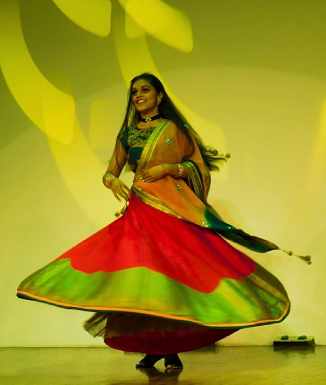

COLLEGE EVENTS
Amatora Preview: MCC's Meraki Paves the Way for Literary Enthusiasts

Meraki, the annual literature showcase, was hosted by the Department of English on Oct. 10. It was a collaborative setup organized by the second year literature students and the dept. professors, with five different events throughout the day.
The showcase started with the inauguration, featuring the customary lighting of lamps and sharing of excerpts from holy books. The Writer’s Bloc’s 3rd edition, a platform for students to express their creativity, was revived after the pandemic. The documentary ‘Sunshine’ made by the PG Literature students was also exhibited. The Head of Department of English, Dr. Sajitha awarded certificates to the editorial team for their contributions.
The Literary Annual Quiz soon took place with 5 teams competing. First-year MA English students came first place, followed by second-year BA English Psychology students. Following the quiz was a display of literary works of students of the college and the much-awaited ‘Symposium on the Genesis of Kathak’ by Sri Mysore B Nagraj and his three disciples. An informative session on the Kathavacham tradition and the evolution of Kathak, Mr. Nagraj also sang musical compositions, with one of them being a Kavit. The end of the symposium came with a Tarana performance, in which the dancers wore anklet belts to give an audit imagery to the audience. Engaging questions were asked by Kathak dancers and students in the audience. A 3rd year UG student described the symposium as “eye-catching, simplified and easily explained for all”.
The showcase concluded with an open mic which had performances by students from all years performing dances, recitation of poetry, singing, and storytelling. Meraki ended on a successive note as the pre-event for Amatora, the literary festival which will be conducted in February.
-Sanghamitra Sanjeev
MALHAR ’23: UNITY IN DIVERSITY

The annual fest of the Hindi Association, Malhar, took place on Sept. 25, 2023, with the theme of Unity in Diversity. The Association’s biggest annual event witnessed the inauguration of the fest by the famous author, Dr. Vinay Kumar Yadav, as the chief guest.
The fest had a variety of competitions for students to take part in ranging from creating documentaries and advertisements to competing in fashion shows, dance battles and plays. The degree driveway was lined with stalls set by both Carmelites and other small business owners, offering students a variety of choices in accessories, stationery, clothes and food to indulge in. Besides the ongoing events, the prize distribution for the Hindi Diwas competitions held earlier also took place.
According to Mahi Aneja, the emcee of the event, the association worked well together in successfully putting together their biggest event of the year. “... one of the biggest things to note would be the amount of work that went in before the actual event. We arrived in college by 7:30am to get everything done. Nobody cared which sector you were in — everyone helped decorate the college for the occasion, make forms and get everything sorted,” she said.
The fest came to a nice close with active participation in all the events conducted. Students were dressed in ethnic wear to match the theme.
-Samixa Bajaj
JUGALBANDI ’23: HONORING INDIA’S DIVERSE DANCE HERITAGE
Jugalbandi, the annual dance festival organised by the Department of Communication Studies, has been a tradition for about two decades now. It is hosted by the second-year students of the Communication Studies major.
The word ‘Jugalbandi’ refers to a duet, which defines the structure of the program – a solo performance each by two artists of different dance forms, followed by a duet between both in a single, synchronized performance. Jugalbandi ’23 spanned over six days and included a variety of dance forms – folk forms like Yakshagana and Mayurbhanj Chhau, classical forms like Kuchipudi, Mohiniattam, Kathak, Manipuri, Kathakali, Odissi, Bharatnatyam, and contemporary dance. The Karnataka bandh on Sept. 29 led to a fusion of Day 4 and Day 6 into a single ‘Mahajugalbandi’ on Oct.1, where four artists of different dance forms shared the stage. On each day, the program was followed by an interactive Q/A session between the artists and the audience, offering insight into their respective art forms.
Jugalbandi is a part of the running ‘Perspectives in Indian Art’ paper taken by Dr. Sahana Das for second-year communication students, who organise the entire program annually. The first-years are tasked with ushering, shadowing the artists and ticketing, while the third-years film the program as an extension of their film paper.
“It was so beautiful, well organized, and well-coordinated,” said Sreetama Sinha Roy, a parent in the audience who enjoyed the performance.
-Samixa Bajaj
An Extravaganza of Commerce and Innovation

Undercurrents 2023, a mega fest organized by the Commerce Association on Sept. 20-21, was a confluence of commerce, technology and innovation.
The fest showcased an array of five competitions in all. The ‘Contingent Fest’ celebrated the fusion of style and substance and featured ramp walks by talented young women from the fields of commerce and management. There were segments for discussing technology and cybersecurity. Participants also took to the stage to talk about their technological explorations and experiences. The event ‘Ai-volution’ was the last one of the day where budding entrepreneurs presented their groundbreaking startup ideas within the digital realm.
The resounding success of Undercurrents 2023 can be attributed to the joint efforts of the six dedicated teams, who ensured the event's seamless execution. Alongside, the fest was co-sponsored by Smaaash Entertainment, including three other sponsors as well.
However, despite the success, it was revealed that there have been concerns expressed by certain participants regarding the objectivity of the results, and instances of discomfort while being on the stage. Having said that, these mentions appear to be incongruent with the established event criteria for evaluating the event.
-Divya Singh
Old Age Mela; Zindagi na Milegi Dobara
Each wrinkle from smiling wide, crying hard or laughing heavily; a life fully lived written on their face.
On Sept. 25, I walked into a campus lined with the usual festive display of stalls, but the amphitheater had a different, homely feel to it. The Human Development Department hosted an academic fest in an initiative to celebrate aging and honor our elderly living in old age homes. Around 25 elderly people were invited and brought to the college by our students. With the release of colorful balloons into the sky, our students performed dance, song and skit about the stages of life. The elders seemed to get excited and loosened up a bit. It was so heartwarming to see them recognise songs or nodding in understanding.
Nuclear families are increasing these days with the need for more space. The elderly often don’t understand the change in family dynamics, used to togetherness, compromise and taking care of each other. Most people in these homes are those that’ve gotten left behind in the fast pace of modern life. Sitting with some of them and talking to them, it’s apparent that a lot of them don’t have anyone to care for them. Talking about it brings a lump to their throat and upon hearing that, in mine. The stigma associated with living in an old age home is a significant barrier for many elderly who may be reluctant to leave their homes and families.
A group of ladies formed a circle and told me how they appreciated the college putting in effort to make this happen for them. Some people are finding friendships, love and contentment in their homes, but it doesn’t happen for all of them. It gets a little lonely out there sometimes. Old age is a stage that requires more attention and they deserve to end their wonderful journey feeling peaceful, satisfied and grateful.
--Netra
Briefs: -
Installation Ceremony ‘23
The Rotaract Club ushered in its new leadership for the year 2023-24. Rtr. Krithika Ashokan assumed office as the President,
alongside the Board of Directors. The event was attended by members and core teams of various other Rotaract Clubs of the state, marking the beginning of a promising year of community service and leadership.
-Hemaline Rose
Prospero ‘23
Prospero, an undertaking by BCom IAF students, took place on 12 and 13 October, 2023. An initiation of the 2018 batch, the fest acted as a means to uphold tradition. This year’s theme - "Financial Odyssey - Navigating the journey to financial success," displays the ability to succeed even during the most challenging of times.
-Zoya